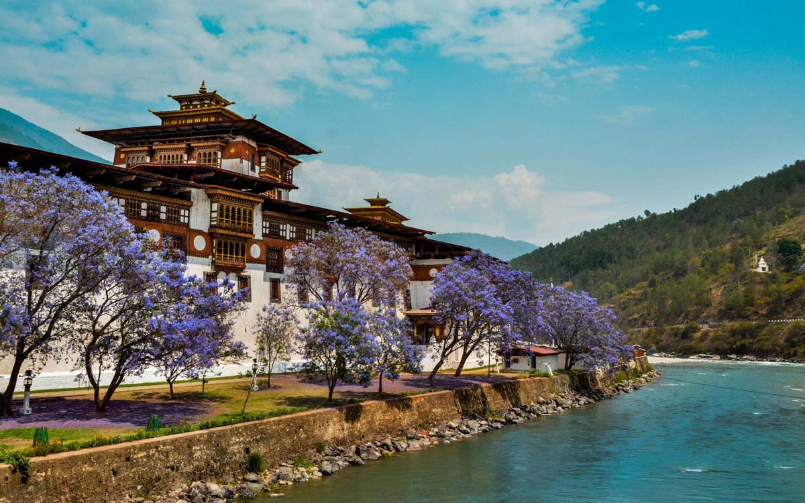

×

Bhutan
Климат
В южных долинах страны средняя температура января колеблется в районе отметки в +11 С, июля +19-21 С, в то время как на севере зимой температура составляет около -4 С, а летом - около +16. При этом, в связи со сложным рельефом поверхности, климатические условия на севере Бутана крайне разнообразны - летом разница температур даже между разными склонами одной долины может доходить до 10 С, а зимой, когда почти все горные районы покрыты снегом, погода может меняться довольно сильно даже в пределах одних суток. Даже летом, когда дневная температура колеблется в пределах +21-23 С, ночи могут быть холодны (до +4 С).
Осадков выпадает от 1000 мм в год на западных и северных склонах, и до 5500 мм в год на южных и юго-восточных склонах. В период с июня по август, когда в южных районах страны доминируют муссонные ветра, количество осадков может доходить до 500 мм в месяц, а в отдельные дни выпадает до 15-20% этой нормы. Сильные штормовые ветра, бушующие в отрогах Гималаев в период муссонов, послужили источником неофициального названия страны - Друк-Юл ("Земля драконов грома"). В течение дождливого сезона в горных районах нередки оползни и селевые потоки.
____